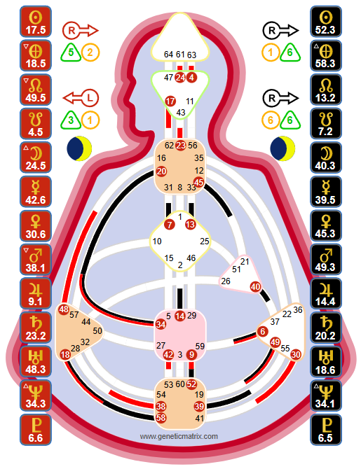

The multi-passionate hybrid. Manifesting Generators carry the same Sacral life force as Generators but with a motor-to-Throat connection that gives them speed, initiating power, and the ability to work on multiple things simultaneously.

Tools, not doctrine. The Human Design System was transmitted through Ra Uru Hu beginning in 1987. Genetic Matrix provides these tools for your own exploration and experiment. The chart shown is Elon Musk - a Pure Manifesting Generator.
A Manifesting Generator is someone with a defined Sacral center and a motor center connected to the Throat. This dual mechanical reality creates a being who has the sustainable life-force energy of a Generator combined with the speed and initiating capacity of a Manifestor. They are hybrids - and that hybrid nature makes them unlike either parent Type.
The motor-to-Throat connection is what distinguishes an MG from a pure Generator. It gives them direct access to expression and action. Where a pure Generator builds momentum gradually, an MG can leap from response to action almost instantly. They move fast. They skip steps. They can work on five things at once and somehow make it all work.
Manifesting Generators make up approximately 33% of the population. Combined with pure Generators, Sacral beings represent about 70% of humanity. MGs bring the speed, the innovation, and the multi-passionate energy that keeps the world evolving.
Key Insight
The biggest challenge for Manifesting Generators is not their speed - it is learning to respond before they initiate. The motor-to-Throat connection creates a powerful urge to just go. But the Sacral still needs to respond first. The sequence matters: something appears → Sacral responds → inform → act. Skip the response and you get frustration. Skip the informing and you get anger.
The Manifesting Generator Strategy has two parts - and both are essential:
First: Wait to respond. Like pure Generators, MGs need something from the outside world to activate their Sacral before committing energy. The gut responds - "uh-huh" or "uhn-uhn" - and this response is the green light. Without it, the MG is initiating from the mind, and frustration follows.
Second: Inform before acting. This is the Manifestor piece. Because MGs move fast and their actions impact others, informing reduces resistance. It is not asking permission - it is letting those who will be affected know what is about to happen. When MGs skip this step, they meet anger and pushback.
Manifesting Generators are often involved in multiple projects, interests, and pursuits simultaneously. This is not a flaw - it is their design. The key is that each pursuit must have a genuine Sacral response behind it. When an MG loses interest in something, it is often because the Sacral response has shifted. The correct move is to pivot - not to force themselves to finish out of obligation.
This can look like quitting to others. It is not quitting. It is the Sacral redirecting energy to where it belongs. MGs who force themselves to finish everything they start - regardless of whether the Sacral is still engaged - burn out and become deeply frustrated.
MGs naturally skip steps. They see the shortcut, take the leap, and fill in gaps later. This efficiency is part of their design - the motor-to-Throat connection allows them to move from A to D without needing B and C. They may circle back for missed steps, and that is fine. The initial leap is correct.
Like Generators, MGs can have different Authorities:
Emotional Authority (Solar Plexus defined): The most common for MGs. Despite their speed, Emotional MGs need to slow down for decisions. The wave must settle. This is the hardest practice for fast-moving MGs - learning that clarity takes time even when every instinct says "go now."
Sacral Authority (Solar Plexus undefined): Pure in-the-moment response. The gut speaks and it is reliable immediately. For MGs with Sacral Authority, the speed of response matches their speed of action - respond and go.
Key Insight
Emotional MGs face a unique challenge: their speed wants to act now, but their Authority says wait. Learning to trust the emotional process - to sleep on it, to let the wave settle - is the MG's deepest practice. The response is still there; it just needs time to be confirmed.
Like Generators, the MG aura is open and enveloping. It draws life toward them. But because of the motor-to-Throat connection, their aura also carries an initiating quality - a sense that something is about to happen. People can feel the MG's energy before they speak or act. There is a buzz, a momentum, an electrical quality to their presence.
When an MG is operating correctly - responding to what lights them up, informing before acting, moving at their natural speed - their aura is magnetic and exciting. When they are frustrated or angry, that same intensity becomes overwhelming and chaotic.
Manifesting Generators have a dual signature and a dual not-self theme, reflecting their hybrid nature:
Satisfaction comes from the Generator side - using Sacral energy in response to things that light you up. Peace comes from the Manifestor side - moving through the world without resistance because you informed before acting.
Frustration signals the Generator misalignment - energy committed without a genuine Sacral response. Anger signals the Manifestor misalignment - acting without informing and meeting resistance from others.
When both satisfaction and peace are present, the MG is operating at full capacity. When both frustration and anger are present, something has gone deeply off track - usually the MG is initiating from the mind without responding or informing.
The question of whether MGs are a separate Type or a sub-type of Generator is one of the most debated topics in Human Design. Here is what the mechanics show:
Shared: Both have a defined Sacral center. Both share the Strategy of waiting to respond. Both experience satisfaction when living correctly and frustration when not. Both have an open and enveloping aura.
Different: MGs have a motor-to-Throat connection that Generators do not. This gives MGs speed, multi-tasking ability, step-skipping efficiency, and an initiating quality. MGs also carry the Manifestor's need to inform and can experience anger when they do not. Pure Generators build steadily and develop mastery through sustained focus; MGs move fast and often work on multiple things simultaneously.
On Genetic Matrix, Manifesting Generators are tracked as a distinct Type because the mechanical differences are significant enough to warrant separate treatment - particularly when it comes to the informing piece of the Strategy.
On Genetic Matrix: Generate a free Foundation chart to confirm your Type and Authority. Advanced charts reveal your Profile, Centers, Channels, and Gates. Pro charts show your complete Variable - the full cognitive architecture of your design.
The experiment: For one week, practice the two-step Strategy. Before acting on anything, check: did my Sacral respond to this? After responding, practice informing those who will be affected before you move. Notice the difference between initiated action (frustration, resistance) and responded-then-informed action (satisfaction, peace).
The celebrity database: Explore Manifesting Generators in Genetic Matrix's 87,000+ celebrity database. See how MG speed and multi-passionate energy manifests across different lives and careers.
Overview of all Human Design Types - Strategy, Authority, and aura mechanics.
The life force. Sacral energy, response, and the path to satisfaction.
The guide. Recognition, invitation, and the path to success.
The initiator. Independence, informing, and the path to peace.
The mirror. Openness, the lunar cycle, and the path to surprise.
See your full chart - Sacral definition, motor-to-Throat connections, Authority, Profile, and the complete architecture of your Manifesting Generator design.
Try free with Starter plan →